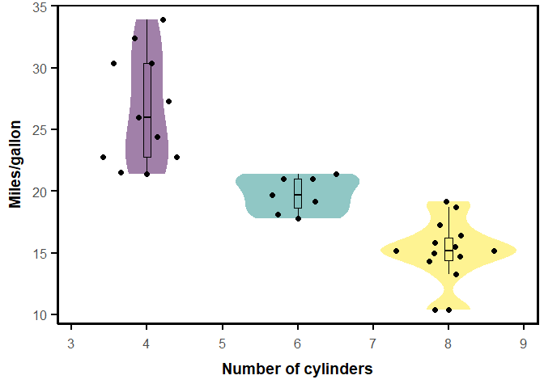
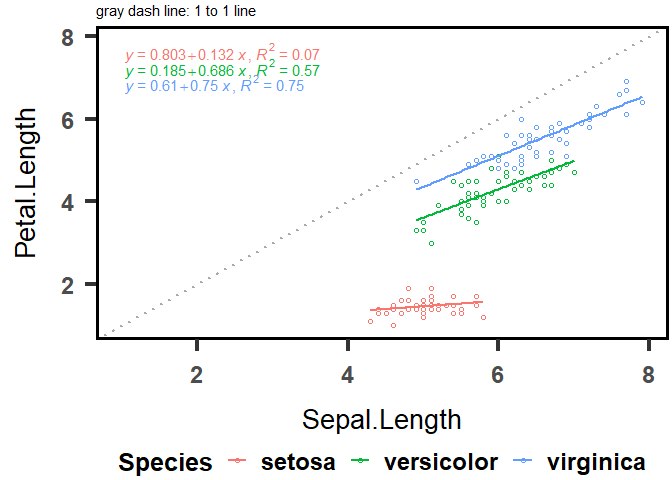
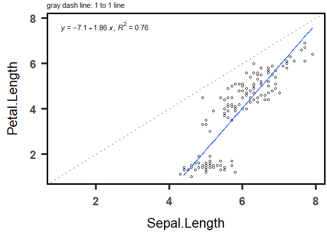

Introduction

The package toolPhD is by-product of the journey of author’s PhD. Hopefully you find these function also useful for you.
Further analysis for original publication using this package can be found in the link (click here).
Installation
The development version can be installed from github as follows:
if (!require('devtools')) install.packages('devtools')
devtools::install_github("Illustratien/toolPhD")
# or
if (!require('remotes')) install.packages('remotes')
remotes::install_github("Illustratien/toolPhD")To update the package:
detach("package:toolPhD", unload = TRUE)
devtools::install_github("Illustratien/toolPhD")Descriptions
There are many useful functions in this package. For detailed tutorial with examples and references, please click the side tab Get started for general tutorial and Refernce for individual function example.
Here is an example for violin_plot()
library(toolPhD)
library(ggplot2)
violin_plot(mtcars,cyl,mpg,labx="Number of cylinders",laby="Miles/gallon") Useful 1:1 line plot plot_121()

plot_121(iris,Sepal.Length,Petal.Length)
Warning: Removed 2 rows containing missing values (`geom_smooth()`).